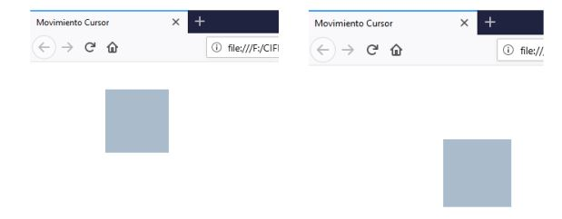
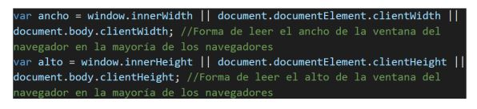

ACTIVIDADES DE TRABAJO UT5. INTERACCIÓN CON EL USUARIO: EVENTOS Y FORMULARIOS
CIFP La Laboral Sectores Industrial y de Servicios
Tarea 5
Crea una web indextarea5 en la que se vea un cuadrado (bloque) de color #AABBCC para ello, puedes utilizar el estilo que se muestra a continuación:
Se pide realizar el código JavaScript/JQuery necesario para que el bloque (que será un elemento 'div') siga al puntero del ratón por la ventana del navegador sin que se salga de los límites de la ventana. Un posible ejemplo será el siguiente:

Debes tener en cuenta las siguientes consideraciones:
Incluye la siguiente línea correspondiente para incluir en el fichero HTML la librería JQuery
Para conocer el ancho y el alto de la ventana del navegador (en la mayoría de los navegadores) se puede utilizar lo siguiente.

Deberemos utilizar el siguiente fragmento de código JQuery para modificar las propiedades “top” y “left” del css para que tenga en cuenta las especificaciones que marca el ejercicio